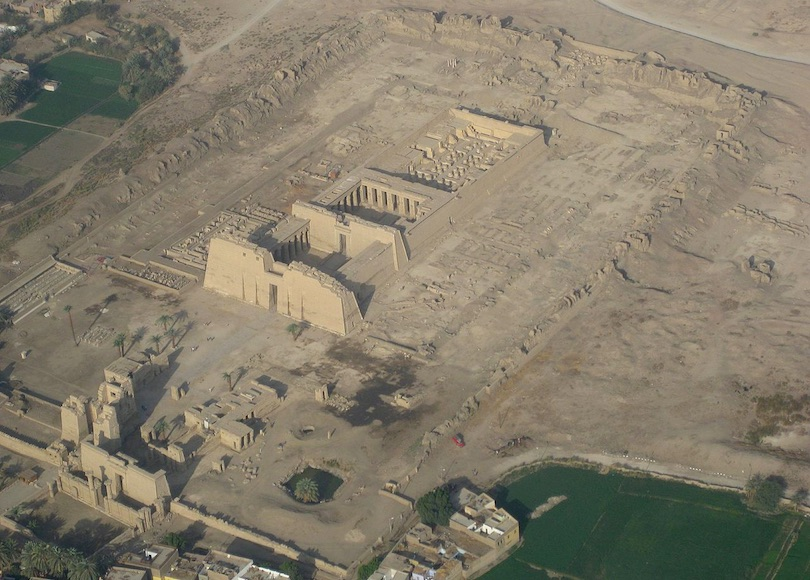
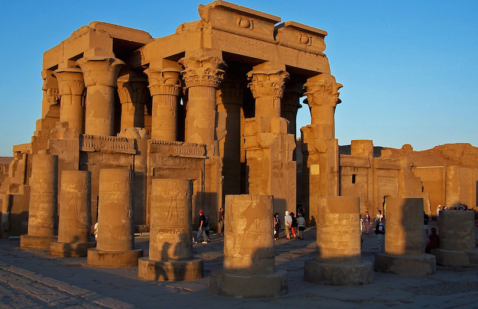
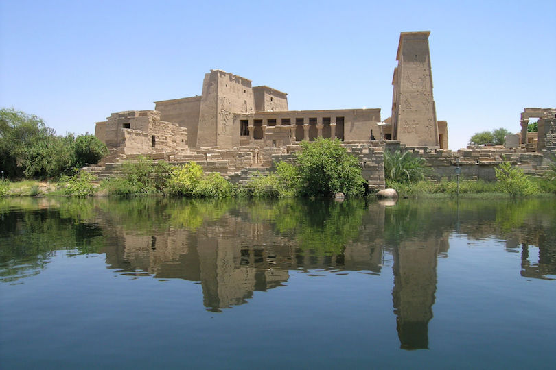
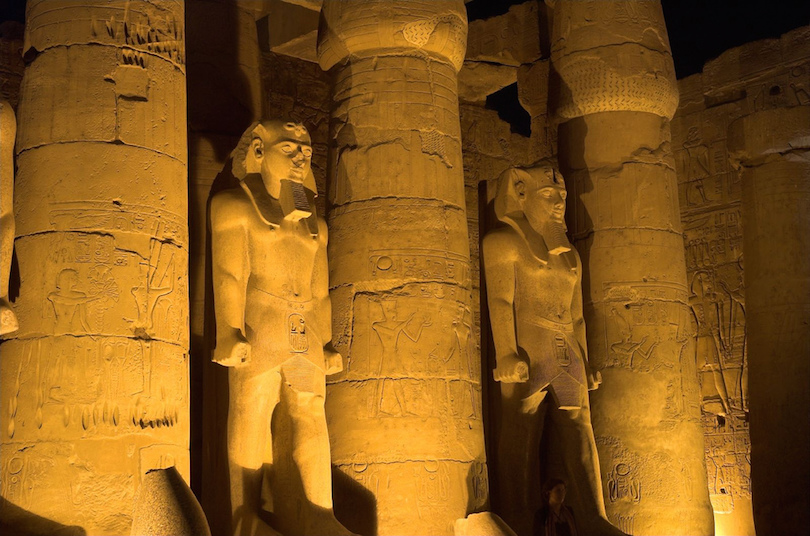
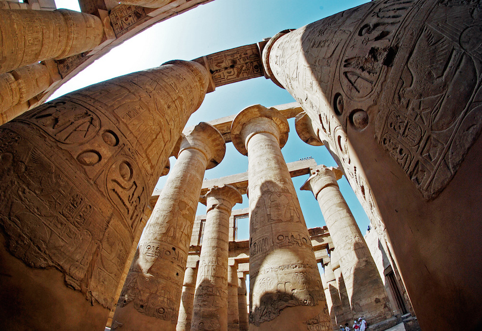

EGYPT TRAVEL EXPERTS
Guide to a Perfect trip in Egypt!
The earliest Egyptian temples were built around the middle of the 4th millennium BC in the shape of reed huts. The last construction on an Egyptian temple was at Philae which ceased to be used in the 6th century AD. So not surprisingly, this list of ancient Egyptian Temples covers a huge variety of different structures that evolved over an enormous period of time and an Egypt tour wouldn’t be complete without visiting at least one of these temples.
● Medinet habu

Located on the West Bank of Luxor, Medinet Habu is the Arabic name for a huge temple complex second only to Karnak in size and better preserved. Pharaohs Hatshepsut and Tutmosis III built a small temple dedicated to Amun on the site. Next to their temple, Ramesses III built his mortuary temple, Medinet Habu’s largest standing monument. Ramesses III then enclosed both structures within a massive mud-brick wall that included storehouses, workshops, and residences.
● kom_ombo

Situated on a high dune overlooking the Nile, The Temple of Kom Ombo is an unusual double temple built during the Ptolemaic dynasty. The actual temple was started by Ptolemy VI Philometor in the early second century BC. The Temple of Kom Ombo is actually two temples and everything is duplicated along the main axis. There are two entrances, two courts, two colonades, two hypostyle halls and two sanctuaries.
● Philae Temples

The island of Philae was the center of the cult of the goddess Isis. The first temple on the island was built by native pharaohs of the 30th dynasty. The temple construction continued over a three century period by the Greek Ptolemaic dynasty and the Roman rulers. The Roman Emperor Trajan built the Trajan’s Kiosk in 100 AD which probably served as a river entrance into the larger temple of Isis. In the 1960s the temple and other monuments on the island were transported to the island of Agilika by UNESCO to save it from being submerged by the rising waters of the Nile due to the construction of the Aswan High Dam. The island of Philae is now buried beneath Lake Nasser.
● luxor temple

The Luxor Temple is located on the east bank of the River Nile in the ancient city of Thebes and was founded in 1400 BC during the New Kingdom. The temple was dedicated to the three Egyptian gods Amun, Mut, and Chons. The temple was the center of the festival of Opet, Thebes’ most important festival. During the annual festival the statues of the three Gods were escorted from the temple of Amun in Karnak to the temple of Luxor along the avenue of sphinxes that connect the 2 temples. Today Luxor is the premier travel destination in Upper Egypt and many Nile cruises start or end in the city.
● karnak

Although badly ruined, few attractions of an Egypt tour are more impressive than Karnak. It is the largest ancient religious site in the world, and represents the combined achievement of many generations of Egyptian builders. The Temple of Karnak actually consists of three main Egyptian temples, smaller enclosed temples, and several outer temples located about 2.5 kilometers north of Luxor. It took millennia to build and enhance the massive Karnak Temple. However, most of the work on Karnak was done by the pharaohs of the New Kingdom (1570-1100 BC). One of most famous structures of Karnak is the Hypostyle Hall, a hall area of 5,000 m2 (50,000 sq ft) with 134 massive columns arranged in 16 rows.
.png)